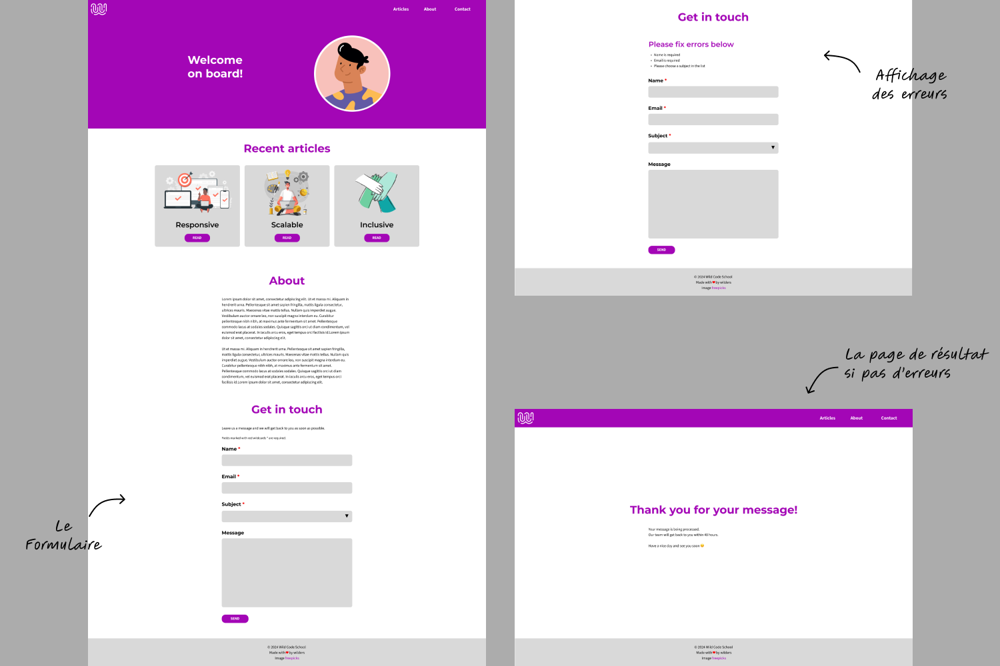
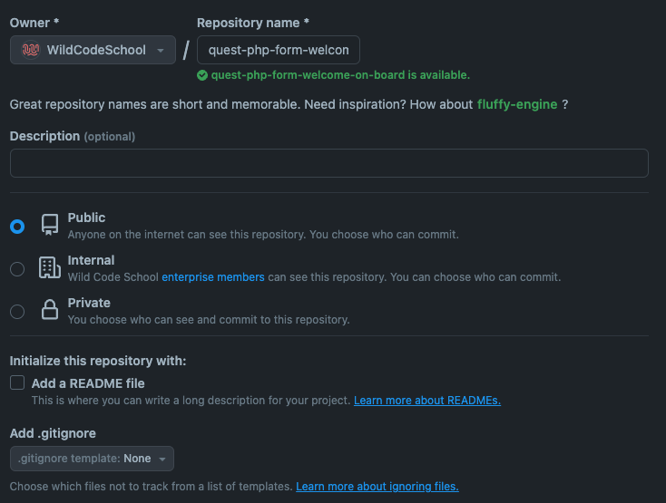

Les formulaires en PHP : Prendre contact
Introduction
Tu commences à mieux comprendre les rudiments de PHP. Tu manipules maintenant les variables, les tableaux et les structures de contrôle. Cette quête va te permettre de mettre en pratique ces notions sur un véritable cas d'usage en projet web : les formulaires. Tu la trouveras sans doute assez technique, mais sache que l'implémentation d'un formulaire est un point essentiel qu'un développeur web doit apprendre à maîtriser.
🤓 À la fin de cette quête, tu seras en mesure de :
- ✅ Mettre en place un formulaire de contact
- ✅ Découvrir et mettre en application les notions suivantes :
- Structurer un formulaire HTML
- Récupérer les données de l'utilisateur
- Mettre en place des validations côté client et côté serveur
- Afficher les erreurs le cas échéant
- Effectuer une redirection après traitement
Sommaire
Nouvelle mission
Dans la continuité de la précédente quête orientée HTML/CSS citée ci-dessous, celle-ci t'est également proposée sous forme de « brief feature » pour être au plus proche des missions confiées à un développeur.
Le brief
Hello :var[user.firstname] 👋
J'espère que tu vas bien 🙂.
Tu te souviens du mini-projet pour lequel tu as fait une intégration HTML/CSS ? Le client était vraiment content du travail effectué et vient de nous demander une évolution : la mise en place d'un formulaire de contact.
Un membre de l'équipe a tout juste eu le temps de commencer le travail, mais à peine le dépôt Github mis en place et quelques fichiers réorganisés, il a été appelé en urgence sur un autre projet. Est-ce que tu pourrais prendre le relai s'il te plaît ?
Voici ce qu'il avait prévu et qui a été validé en réu client :
- mettre en place le formulaire sur la page d'accueil avec les champs suivants :
- Nom (obligatoire)
- Email (obligatoire)
- Sujet du message (obligatoire) sélectionnable dans une liste déroulante. Nous n'avons pas encore la liste précise mais tu peux d'ores et déjà indiquer ces quelques choix : « Prendre rendez-vous, inscription à la newsletter, réclamation, demander un devis…) ».
- Message (facultatif)
- effectuer un minimum de vérifications avant la soumission et surtout après, côté serveur,
- afficher les erreurs sur la page d'accueil s'il y en a,
- rediriger l'utilisateur vers une autre page si tout s'est bien passé. Un message générique de remerciement y sera affiché.
Inutile de t'occuper du traitement de la donnée pour le moment car on attend encore confirmation du client pour savoir s'il veut enregistrer les messages en base de données ou envoyer directement un email. On saura ça dans la semaine, donc autant prendre de l'avance et mettre en place dès maintenant tout ce que je viens de lister 😉.
Dernière chose, une maquette a été faite par l'équipe design pour cette fonctionnalité. La voici :

Essaie de faire au mieux pour la respecter mais garde en tête que le plus important est de mettre en place les autres points.
Et enfin, voici le lien du dépôt Github déjà préparé : https://github.com/WildCodeSchool/quest-material-php-form-welcome-on-board. Des informations sont indiquées dans le README pour continuer le travail.
Je reste disponible si besoin.
Bon courage à toi, merci et bonne journée 🌞
Le debrief
Eh bien, on a affaire ici à un cas classique d'intégration de formulaire. PHP va s'avérer très performant pour accomplir cette mission. Voici quelques conseils pour t'y atteler.
Préparer son environnement de travail
Cette fois-ci, du code est fourni. Il faut déjà en prendre connaissance.
- Clone le dépôt qui est indiqué et ouvre une nouvelle fenêtre de ton IDE en racine de celui-ci.
- Il y a un fichier README qui explique comment lancer le projet ainsi que la structure des fichiers CSS qui a été adoptée.
- Tu trouveras également les fichiers de la maquette dans le dossier
/docssi besoin.
Passons à la réalisation.
Mise en place du formulaire
La première étape va consister à poser la structure HTML du formulaire. Si besoin, consulte la quête ci-dessous qui te donnera les clés ainsi que des ressources complémentaires pour t'aider.
Profite de cette étape pour mettre un peu de CSS afin de te rapprocher au mieux de la maquette.
Récupération des données
Poursuis ta mission en apprenant à récupérer les données côté serveur. La quête suivante t'expliquera les subtilités des méthodes HTTP GET et POST et comment afficher les données récupérées.
Dès cette étape, tu vas avoir besoin d'intégrer du PHP dans du HTML. Voici une quête qui te donnera quelques conseilles et astuces.
Vérification et validation des données
Dernière étape très importante : le contrôle et la validation des données. La quête suivante reprend pas à pas les points importants à respecter avant et après la soumission d'un formulaire pour contrôler la saisie de l'utilisateur. Prends le temps nécessaire pour bien cerner les enjeux côté front-end et côté back-end.
Challenge
Lorsque tu penses avoir terminé cette mission, publie ton code sur ton compte Github et colle le lien en guise de solution au challenge.
Le dossier que tu as cloné étant de fait déjà relié à un autre dépôt, il va falloir ajouter une référence de répertoire distant.
-
Crée un nouveau dépôt vide quest-php-form-welcome-on-board sur ton compte Github en prenant soin de ne pas créer de fichier
READMEni de.gitignore
-
Récupère l'adresse SSH du dépôt que tu viens de créer et entre la commande suivante dans ton terminal en racine du projet :
git remote add challenge <adresse_ssh_du_depot>
⚠️ remplace <adresse_ssh_du_depot> par la bonne valeur 😉.
- Vérifie que ton projet est à présent correctement relié avec la commande :
git remote -v
Tu es censé voir quelque chose comme ceci :
challenge git@github.com:<ton_nom_utilisateur>/quest-php-form-welcome-on-board.git (fetch)
challenge git@github.com:<ton_nom_utilisateur>/quest-php-form-welcome-on-board.git (push)
origin git@github.com:WildCodeSchool/quest-material-php-form-welcome-on-board.git (fetch)
origin git@github.com:WildCodeSchool/quest-material-php-form-welcome-on-board.git (push)
- Fais un commit, puis un push sur ton dépôt :
git push challenge main -u
Si tu es complètement perdu à cette étape, ne perds pas trop de temps et demande conseil à tes collègues.
Critères de validation
- [ ] Le formulaire est correctement structuré avec les balises et attributs HTML appropriés pour les champs obligatoires.
- [ ] Les vérifications et validations sont effectuées côté serveur.
- [ ] S'il y a des erreurs, elles sont affichées à l'utilisateur au-dessus du formulaire, comme l'indique la maquette.
- [ ] S'il n'y a pas d'erreurs, l'utilisateur est redirigé vers une page qui affiche un message de remerciement.
- [ ] Un minimum de CSS a été appliqué aux champs du formulaire pour un rendu agréable et au plus proche de la maquette.
==$== Une solution possible est disponible sur ce dépôt sur la branche solution. Tu peux accéder directement au commit de solution et voir les modifications en un coup d'œil.